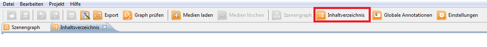

Im Inhaltsverzeichnis-Editor kann das Inhaltsverzeichnis des Projekts erstellt und bearbeitet werden.
Der Inhaltsverzeichniseditor kann geöffnet werden, indem man auf das Symbol in der Funktionsleiste klickt.

Nun kann man dem Inhaltsverzeichnis einen Titel geben und neue Einträge können hinzugefügt werden. Per Drag and Drop können die verfügbaren Szenen jeweils einem erstellten Eintrag zugeordnet werden.